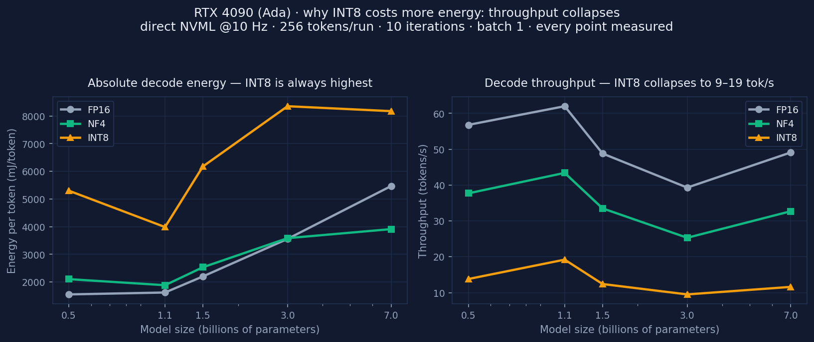

"Quantization doesn't always save energy. See for yourself."
Every quantization tool tells you how to quantize. We tell you whether you should — and ship the container that lets you check us.
Scope of every number here: GPU-package power (NVML), not whole-system draw — no PSU losses, CPU, DRAM, cooling, PUE or CO₂e. Single-stream decode, batch 1, 256 tokens. Replication is stated per point: the main dataset is n = 2 (CV < 2%), the RTX 4090 deep dive is n = 1 per configuration. Limits and how to disprove us →
Open measurement stack: an MLCube-compatible container doing direct NVML power sampling, the datasets it produced (Zenodo, CC BY 4.0), and the preprint that interprets them.
Solid lines connect measured points only (direct NVML). Marker fill encodes replication, not accuracy: filled dots are points repeated at least twice in the main dataset (v1.1.0, n = 2, CV < 2%); hollow dots on a faded line were measured once (n = 1) — the July 2026 RTX 4090 deep dive and one early RTX 4090D point — so they carry no measured spread and should be read as a single observation, not as a distribution. INT8 was measured on A800 and RTX 4090 only, and sizes outside each GPU's measured range aren't drawn here. For fitted extrapolation beyond the measured range, use the Your model tab.
NVML on-device power sampling at 10 Hz over the decode phase, 256 tokens per run with warmup, repeated for the configured iterations. Energy, average power and throughput come out of that trace — no datasheet wattage, no wall-meter guesswork.
No GPU, or NVML power telemetry unavailable? The run still completes, but the report is derived from the published dataset and labelled basis ≠ measured with the fallback named in measurement_source. A fallback is never dressed up as a measurement.
An MLCube-compatible descriptor with one task, energy_estimate, exercised with the official mlcube CLI on the Docker platform; a CPU descriptor verifies the build/mount/report contract without a GPU. Dependencies are pinned with a full transitive lock, because bitsandbytes and torch change NF4/INT8 kernels between releases.
Every report validates against schema/energy.schema.json and carries its own scope: certified_benchmark_result: false, plus a scenario_note saying the SingleStream/Offline label is nominal and not enforced by LoadGen.

NF4 reaches break-even just above 3B on this card: +36% energy penalty at 0.5B → +0.8% at 3B → −28% saving at 7B. These points are now folded into the fitted Ada curve, which puts the crossover at ≈3.7B — later than this card alone, because the fit also carries the more heavily penalised RTX 4090D anchors. INT8 (bitsandbytes LLM.int8()) did not save energy at any size we tested (+50% … +242%, five sizes, one card, n = 1 each): it does lower instantaneous power, but decode throughput collapses to 9–19 tok/s (FP16: 39–62 tok/s), so a token ends up costing more. That is a statement about this backend on this card, not about INT8 in general — a different kernel, card or serving stack could well reverse it.
Every bar here points the wrong way: no model size we tested saved energy in INT8 on this card, and the penalty does not fall monotonically with size (1.5B is worse than 1.1B). The penalty does shrink towards 7B, but we have no measurement above it, so we do not claim INT8 breaks even at some larger size — on this card INT8 bought memory, not energy. Bars are hatched because these are single trials (n = 1) on one RTX 4090. The 1.1B bar has since been re-measured on a second RTX 4090 instance (August 2026, same container): +138% against the July run's +146% — two single trials 8 points apart, on different software versions. Both are in measured.csv as separate n = 1 anchors; neither is a replication of the other. Also note: INT8 was measured on Ada and Ampere only, H100 borrows the Ampere curve (estimated, not measured), and T4 and RTX 5090 have no INT8 curve at all.
| ✅ Do | ⚠️ Don't |
|---|---|
| Treat each value as a real measurement of this RTX 4090 under this workload (256 tokens, batch 1, single stream) | Read n = 1 as a tight distribution: every configuration was run once (ten decode iterations integrated into one energy total), so there is no std and no CV — unlike the main dataset's n = 2 / CV < 2% |
| Compare precisions on the same card — that is what ΔE% is | Compare cards across these two layers without noting that one is replicated and one is not (hollow markers and hatched bars mark n = 1 site-wide) |
| Use the numbers as GPU-package energy from direct NVML sampling | Present them as whole-system, datacenter or carbon numbers — there is no PUE, no CPU/DRAM and no grid model here |
| Cite it as a supplementary single-platform case study (DOI) alongside v1.1.0 | Cite it as a certified MLPerf/MLCommons result, or as a replacement for the main dataset |
| Reproduce or contradict it — one card, one hour: run the container and publish your point | Assume our card generalises to yours: cooling, driver, power limit and BIOS all move absolute energy |
All raw energy.json reports, the aggregated CSV, environment metadata and both figures are archived
under DOI 10.5281/zenodo.21528103,
CC BY 4.0 — a single-platform deep dive that sits alongside the main
v1.1.0 dataset, which remains
the reference for every other GPU here. Honest scope: n = 1 per configuration
(no std/CV yet, unlike v1.1.0's n = 2 / CV < 2%) and NVML measures GPU-package power,
not whole-system wall power — a supplementary case study, not a certified benchmark. Reproduce it on your own card
from the Run it yourself tab.
Evidence over hype — does quantization actually lower your LLM inference energy, or raise it?
EcoCompute answers a single question: does quantization actually lower the energy cost of your LLM inference — or raise it? Most quantization tooling tells you how to quantize; EcoCompute tells you whether you should.
Weight-only quantization (NF4/INT8) reduces memory footprint, but it does not always reduce energy. On small models the dequantization overhead can outweigh the memory-bandwidth savings, so quantization increases energy; on larger models it starts to save. The exact "crossover" point depends on both model size and GPU architecture.
Every number on the "Tested models" tab comes from direct NVML power sampling during real inference (10 Hz, 256 tokens/run, 10 iterations) across four NVIDIA architectures (Turing, Ada, Ampere, Blackwell) — not TDP estimates. Where we model rather than measure (latency/throughput via a roofline model, or sizes outside the measured range), we label it explicitly. We never present estimates as measurements.
The measurement is open, not just the numbers. We develop the EcoCompute energy MLCube, an MLCube-compatible container that runs the same direct NVML power sampling on your GPU and writes an energy.json with the exact fields these charts read (full guide: the container page; drop your report on the Run it yourself tab). The newest column on this site — RTX 4090 (Ada), July 2026 — was produced with it: all 15 configurations (five models, 0.5B–7B × FP16/NF4/INT8) are real hardware measurements, and they extend our Ada coverage to INT8 and 7B for the first time. The complete run — raw per-configuration reports, aggregated CSV, environment metadata and figures — is archived on Zenodo under 10.5281/zenodo.21528103 (CC BY 4.0). It is a supplementary deep dive alongside the main v1.1.0 dataset, not a replacement for it and not a certified benchmark: n = 1 per configuration, and NVML reports GPU-package power rather than whole-system draw.
Based on the preprint "Weight-Only Quantization Does Not Always Save Energy: An Empirical Study of LLM Inference Across NVIDIA GPU Platforms" by Hongping Zhang (Independent Researcher, Changsha, China; ORCID 0009-0000-2529-4613), openly available on SSRN. The measurement methodology — reproducible, direct NVML power sampling rather than TDP estimates — is the paper's core contribution, and the dataset is actively being expanded to cover more GPU architectures and model families.
Three artifacts, three jobs — cite the one that matches your claim. The full map, with concept vs version DOIs and BibTeX for each, lives on Artifacts & citation.
Older references still circulating: v1 (113 configurations, 10.5281/zenodo.18900289, March 2026) is superseded by v1.1.0 — mirrors or skill listings that still say “113+ configurations” are describing v1.
We are looking for collaborators to reproduce EcoCompute measurements across additional GPUs, cloud instances, model families and quantization backends. If you operate NVIDIA, AMD or other accelerator infrastructure and want to contribute comparable energy-per-token data, please get in touch — a run that contradicts the published curve is the most valuable thing you can send. Start from the container page, then open an issue or pull request on ecocompute-mlcube with your energy.json.
The same engine that powers this page is available programmatically — build EcoCompute checks into your own tooling or agents. The API is optional: this page computes every number locally from the fitted curves, so nothing here depends on the API being reachable.
GET /v1/estimate · GET|POST /v1/optimize at ecocompute-estimator…workers.dev (CORS open) checking…recommend_config for Claude Desktop / CursorEcoCompute is an independent research project. Our goal is honesty over hype: we show what the measurements say — including when quantization is the wrong choice.